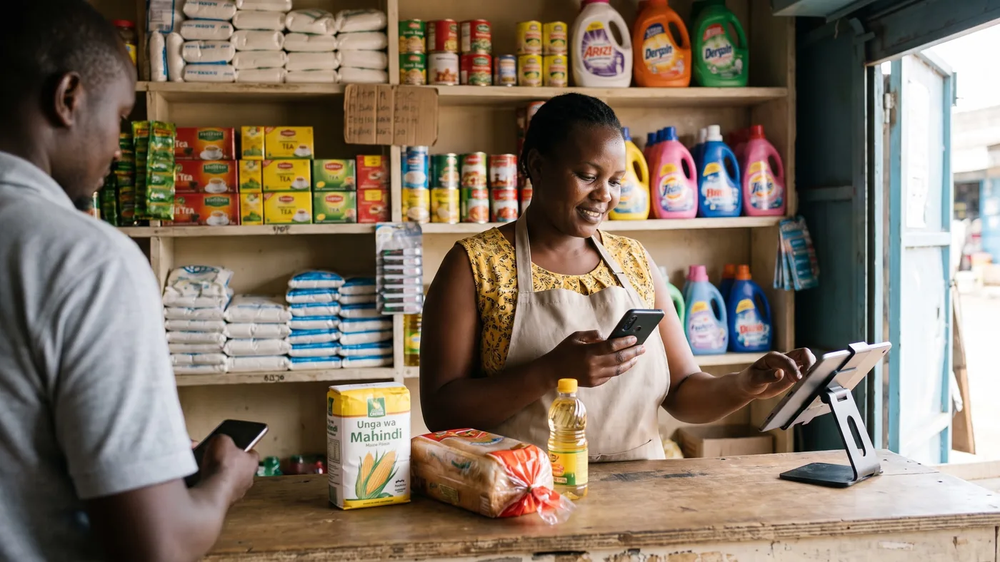

M-Pesa Scams Targeting Kenyan Shop Owners: How to Protect Your Till
A customer taps their phone, turns the screen towards you, and you catch a glimpse of an M-Pesa message with your name and the right amount on it. They're in a hurry, so you bag the goods and move to the next customer. Later, when you actually check your till number, nothing landed. That single habit, trusting a screen you didn't check yourself, is exactly what fake M-Pesa alerts, reversal fraud and prompt scams are built around, and Kenyan traders lose stock and cash to it every week.

The fake M-Pesa message trick
The trick is simple and it works because it looks so ordinary. Someone edits an old, genuine M-Pesa confirmation message with a fake-message app, changing the amount, the time and the reference number, and shows you the result or forwards it to your phone. No money has actually reached your till.
Worth reading next: before you sign anything, check POS contract lock-in, then chocolate shop POS software. If it applies to you, also read about cash flow management.
It succeeds because the edited message can look identical to a real one at first glance, and because the scammer plays the scene fast: rushed, apologetic about "network," pushing you to hand over the item before you've checked anything on your side. Once the goods are gone, there's nothing left to reverse.
A genuine M-Pesa message always arrives from the sender name M-PESA, not a personal number, and Safaricom's own fraud-awareness page tells customers to confirm any suspicious message by checking their real balance rather than trusting the text on screen. That's a habit worth building into every sale, not just the ones that feel off.
M-Pesa reversal fraud: paid, then unpaid
This one is nastier because the payment is real, at first. The buyer genuinely sends the money, walks off with the goods, then contacts Safaricom claiming the transfer was sent by mistake and asks for it to be reversed. If the reversal goes through, you're left with neither the stock nor the cash.
Traders in Nairobi's Eastleigh district have described exactly this happening to them repeatedly enough that many now insist on cash for bigger sales. One trader quoted in local reporting called it "pure daylight robbery," and business owners there say they're simply tired of losing both stock and money to it.
There's no perfect fix if a reversal is approved on the buyer's word alone, but keeping your own sales record, what was sold, to whom, for how much, and on which till transaction code, gives you something concrete to dispute a wrongful reversal with, rather than just your memory of the sale.
STK push prompts: approve first, lose money after
A different trap starts on your own phone. You get an M-Pesa payment prompt (an STK push) you didn't expect, and if you approve it without reading it carefully, you can authorise a payment going out, not coming in. Safaricom has publicly urged customers to check the till number, paybill number or business name shown on a prompt before approving anything, and to only approve a prompt they themselves triggered.
The safest rule for a shop counter: never approve a payment prompt on behalf of a customer, and never accept a customer's claim that "it's already been approved, just check your phone," if you weren't the one who triggered it.
Shiriki Pay and the favour that isn't
Shiriki Pay lets an M-Pesa user share account access with someone they trust, and Safaricom has warned that fraudsters exploit exactly that feature. They build a friendly rapport with a target over time, then ask to be added as a beneficiary "just as a favour," and use that access to make unauthorised transactions afterwards.
This is more of a personal-account risk than a till risk directly, but the lesson carries over to the counter: don't grant account access, add a beneficiary, or share a PIN with anyone you haven't personally verified, no matter how friendly or familiar they seem.
| Sign it's genuine | Sign it's fake or unverified |
|---|---|
| Message sender name reads M-PESA | Sent from a personal phone number |
| Your own balance or statement on *334# actually changed | Only visible on the customer's screen or screenshot |
| You checked calmly, in your own time | You were rushed and told there's "no time to check" |
| A prompt you personally triggered by choosing "Buy Goods" | An unexpected prompt someone asks you to just approve |
Checked August 2026 against Safaricom's own fraud-awareness page and reporting on recent scam patterns in Kenya. Fraud tactics evolve, so treat this as a starting checklist, not a complete list.
How to verify a payment without losing your queue
None of this needs to slow your till down by more than a few seconds once it's a habit. A handful of rules cover almost every case:
- Check your own phone, your own confirmation SMS or your balance on *334#, every time, not the customer's screen.
- Confirm the till or paybill number and business name shown on any prompt before approving anything, and only approve prompts you triggered yourself.
- Treat urgency as a reason to slow down, not speed up. A genuine buyer will wait the ten seconds it takes you to check.
- Never share your PIN, not with a "customer care agent," not with a customer claiming a failed transfer, not with anyone.
- Report anything suspicious by texting 333, Safaricom's fraud-reporting short code, even if you weren't the one who lost money.
If a payment genuinely hasn't landed yet, that's normal, M-Pesa transfers occasionally take a moment. The rule isn't "never trust a delay," it's "never hand over goods before you've seen the money on your own side."
Your cashiers face this more than you do
If you're not always the one standing at the till, your staff are making these exact calls every time you're not there, often under more pressure than you'd tolerate from a customer yourself. A queue building up behind someone waving a phone is precisely the moment a fake message or a rushed prompt succeeds.
Two things help. First, make "check your own phone before releasing goods" a rule every employee is trained on and reminded of, not something you assume they'll work out. Second, give each cashier their own PIN or login so a sale is tied to a name, not a shared account, so a pattern of unconfirmed payments shows up against one person instead of vanishing into the day's total. We go deeper on setting per-employee limits in our guide to customer tabs and staff discount limits.
Where digabloPos fits, and where it doesn't
digabloPos
digabloPos records the payment method on every single sale, cash, M-Pesa or a customer tab (deni), with an unalterable, timestamped log tied to the employee who rang it up. That's the discipline this whole article is about: a record you can check against reality instead of piecing it together from memory or a screenshot. It runs on a genuine offline mode with automatic sync, so a dead connection doesn't stop a sale from being recorded correctly, it catches up once your signal returns. Permissions are set per employee, including a cap on how much discount a cashier can give, so a junior staff member's mistakes stay visible and bounded.
Be clear-eyed about the limit. digabloPos does not verify M-Pesa transfers, detect fake messages, or reverse a fraudulent reversal, and no POS software genuinely can, that always means checking your own phone. It is not a payment processor and does not advertise processing or settling M-Pesa itself: it stays payment-method agnostic and charges no forced payment commission, so you keep your own till number and whatever cost advantage that gives you. The base plan is free forever for 2 employees with 30 days of history; a third employee is roughly $5 a month and unlimited report history is a paid module at roughly $20 a month, so check the current list before committing.
👍 Strengths
- Deni / customer tab tracking with a visible per-customer balance
- Full offline mode, so a dead signal doesn't cost you the record
- Per-employee permissions and discount caps, tied to a named login
- Free forever base plan, no forced payment commission
👎 Notes
- Does not verify M-Pesa transfers or detect fake messages, no software does that for you
- Does not process or settle M-Pesa or any mobile-money scheme itself
- Extra employees and unlimited report history are paid add-ons, not part of the free plan
See a real payment log before you decide
Set up a free register in a few minutes and record a day of test sales across cash, M-Pesa and a customer tab, then check the log actually shows you who took what and when.
Create my free registerA short daily routine that catches the gap
None of this needs to be complicated. A few habits, kept every single day, close most of the gap these scams rely on.
- Never release goods on a screen you didn't check yourself. Your own phone, your own balance, every time.
- Save Safaricom's official fraud short code, 333, in your phone now, before you need it in a hurry.
- Record the payment method at the moment of sale, cash, M-Pesa or deni, not from memory at closing.
- Reconcile your till number against your own record at close, cash counted physically, M-Pesa checked on *334# or your statement.
- Talk to your staff about any mismatch on a fixed day each week, while the pattern is still small enough to fix.
None of this stops a determined scammer from trying their luck. What it does is stop one missed check from becoming stock you never get paid for, and stop a small daily gap from turning into a monthly one nobody can explain.
Frequently asked questions
How does the fake M-Pesa message trick actually work?
Fraudsters use an app that edits an old, real M-Pesa confirmation message, changing the amount, time and reference number, then forward it or simply show the screen to a busy shopkeeper as proof of payment. No money has actually moved. It works because the fake message can look identical to a genuine one at a glance, and it only succeeds if you hand over goods before checking your own phone or till.
A customer shows me an M-Pesa message on their phone, is that enough proof I've been paid?
No. A message on someone else's screen proves nothing about your account. Genuine M-Pesa messages arrive from the sender name M-PESA, not a personal phone number, but the only real proof is your own confirmation SMS or your own balance on *334# actually moving. Make checking your own phone a fixed habit before you hand over goods, even for regular customers.
What is M-Pesa reversal fraud and how do I avoid it?
The buyer pays genuinely, takes the goods, then contacts Safaricom or their bank claiming the payment was sent by mistake and asks for it to be reversed or refunded, leaving you short both the stock and the money. Traders in Nairobi's Eastleigh district have reported exactly this pattern and some now insist on cash for larger sales as a result. If you accept M-Pesa, keep your own transaction records and receipts so you can dispute a wrongful reversal with evidence.
What is the Shiriki Pay scam and does it affect my shop?
Shiriki Pay lets an M-Pesa user share their account with a trusted beneficiary. Safaricom has warned that fraudsters build a friendly rapport with a target, often over time, then talk them into adding them as a beneficiary, after which they make unauthorised transactions. It is more of a personal-account risk than a till risk, but the same rule applies at your counter: never add anyone as a beneficiary or give account access to someone you have not personally verified, however friendly they seem.
How do I report a fake M-Pesa message or suspected fraud?
Forward the suspicious message or report the incident by texting 333, Safaricom's dedicated fraud-reporting short code. Do this even if no money was lost, since it helps get the number blocked before it is used on the next shop owner.
Does digabloPos verify M-Pesa payments or detect fake messages for me?
No, and treat with caution any POS that claims it can. Verifying an M-Pesa payment always means checking your own phone, no software sits inside Safaricom's system to confirm that for you. What digabloPos does is record the payment method on every sale, cash, M-Pesa or a customer tab, with an unalterable, timestamped log per employee, and it works fully offline, so the record survives even when your signal doesn't.
Official sources
Scam tactics change fast in Kenya. Check them at source rather than taking our word for it.
- Safaricom, M-Pesa fraud awareness: official guidance on spotting fake messages and verifying transactions.
- Central Bank of Kenya: the regulator overseeing mobile money and the national payments system.
- The Kenya Times, on Eastleigh traders and M-Pesa reversal fraud: real trader accounts of reversal scams.
- Nairobi Wire, on Safaricom's Shiriki Pay fraud warning: Safaricom's own advisory, dated July 2026.